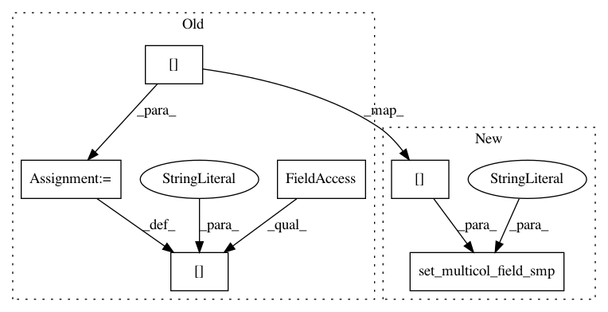

e4145e615afe2540b3bd3787e013e0f6e57f68e9,scanpy/data_structs/data_graph.py,,add_or_update_graph_in_adata,#Any#Any#Any#Any#Any#Any#Any#Any#Any#,22
Before Change
graph.update_diffmap()
adata.add["data_graph_distance_local"] = graph.Dsq
adata.add["data_graph_norm_weights"] = graph.Ktilde
adata.smp["X_diffmap"] = graph.rbasis[:, 1:]
adata.smp["X_diffmap0"] = graph.rbasis[:, 0]
adata.add["diffmap_evals"] = graph.evals[1:]
return graph
After Change
graph.update_diffmap()
adata.add["data_graph_distance_local"] = graph.Dsq
adata.add["data_graph_norm_weights"] = graph.Ktilde
adata.set_multicol_field_smp("X_diffmap", graph.rbasis[:, 1:])
adata.smp["X_diffmap0"] = graph.rbasis[:, 0]
adata.add["diffmap_evals"] = graph.evals[1:]
return graph
In pattern: SUPERPATTERN
Frequency: 3
Non-data size: 6
Instances
Project Name: theislab/scanpy
Commit Name: e4145e615afe2540b3bd3787e013e0f6e57f68e9
Time: 2017-11-10
Author: f.alex.wolf@gmx.de
File Name: scanpy/data_structs/data_graph.py
Class Name:
Method Name: add_or_update_graph_in_adata
Project Name: theislab/scanpy
Commit Name: e4145e615afe2540b3bd3787e013e0f6e57f68e9
Time: 2017-11-10
Author: f.alex.wolf@gmx.de
File Name: scanpy/tools/diffmap.py
Class Name:
Method Name: diffmap
Project Name: theislab/scanpy
Commit Name: e4145e615afe2540b3bd3787e013e0f6e57f68e9
Time: 2017-11-10
Author: f.alex.wolf@gmx.de
File Name: scanpy/tools/dpt.py
Class Name:
Method Name: dpt